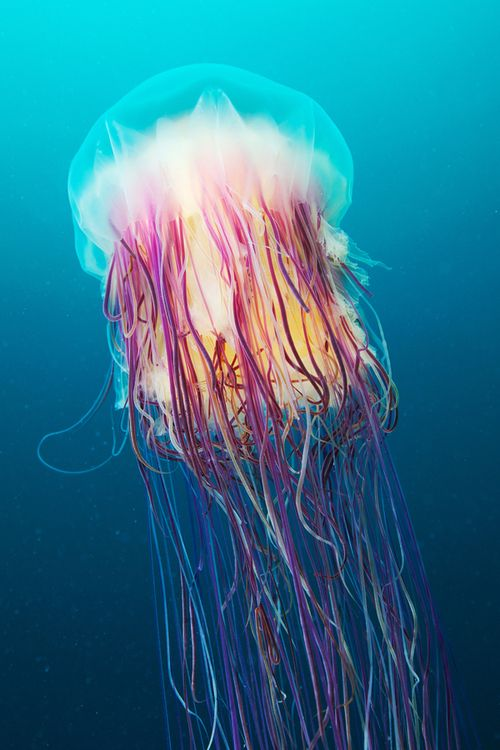

- habitat
- history
- behavior
Jellyfish are found all over the world, from surface waters to the deep sea. Scyphozoans (the "true jellyfish") are exclusively marine, but some hydrozoans with a similar appearance live in freshwater. Large, often colorful, jellyfish are common in coastal zones worldwide. The medusae of most species are fast-growing, and mature within a few months then die soon after breeding, but the polyp stage, attached to the seabed, may be much more long-lived. Jellyfish have been in existence for at least 500 million years,[1] and possibly 700 million years or more, making them the oldest multi-organ animal group.
